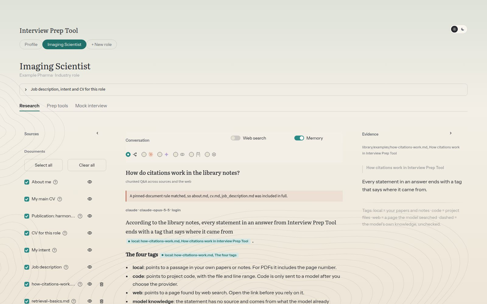
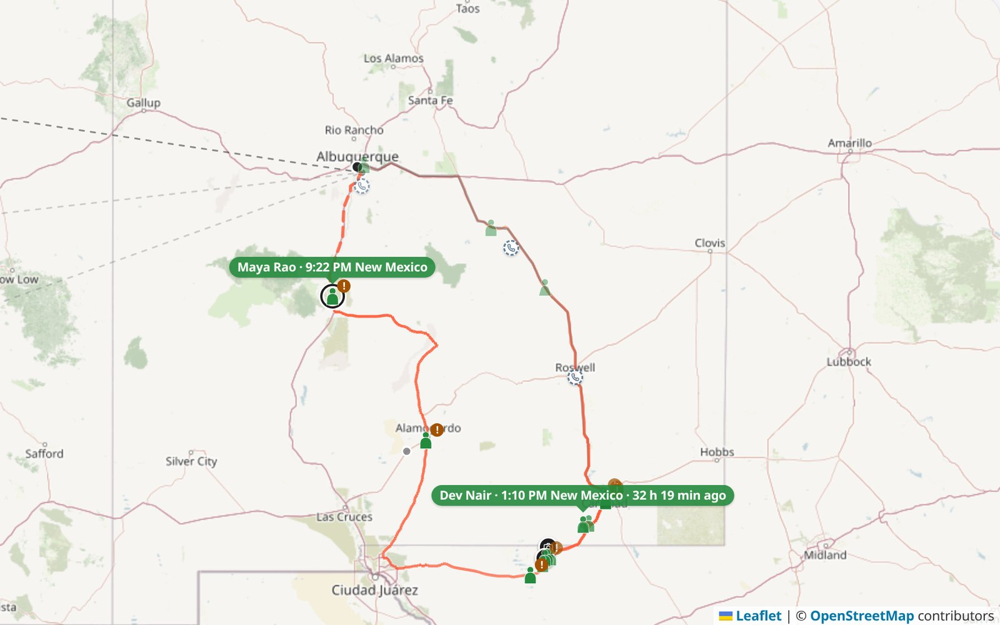

Recipes & restaurant reviews
Medical Imaging Researcher Photography
Hello! I'm a computational biomedical imaging researcher specializing in AI-driven image analysis, advanced image processing and quantitative methods to identify and validate imaging biomarkers of disease. My work spans MRI and PET, from multisite harmonization and PET quantification to MRI reconstruction. My goal is to build robust, scalable tools for precision imaging and, ultimately, to make high-quality imaging accessible to everyone.
Research Professional
I am building AI-powered clinical assessment tools that combine speech AI, generative models, and LLM-driven pipelines to bring automated neuropsychological screening to scale, with a focus on real-world deployment in memory and aging clinics. My work includes real-time speech-to-text and text-to-speech systems, NLP scoring engines that grade cognitive test domains from voice transcripts, and computer-vision pipelines that auto-score hand-drawn visuospatial tasks using graph matching techniques. I'm focused on building clinical-grade tools that are fast, accurate, and easy to deploy, whether in the cloud or on-premise through containerized ASR/TTS infrastructure.
Experience
Education
University of Southern California, USA
Medical Imaging and Imaging Informatics
2016 – 2018
Bhilai Institute of Technology, India
Electrical and Electronics Engineering
2010 – 2014
Photography
Beyond Work
Outside of work, I'm usually out on a trail run, on my bike, experimenting in the kitchen, or somewhere with my camera. I've come to endurance sport fairly recently and love it. The long runs and rides clear my head as much as they tire my legs. Cooking scratches the same itch for precision, and photography keeps me paying attention to the world around me.
Recipes & restaurant reviews
Beans, brews & cafés
Trail runs, rides & races
Projects

A retrieval-augmented AI app that answers questions about my own papers, notes and code with Claude, Gemini, OpenAI or local models, and tags every statement with its source. It also runs AI mock interviews, behavioral, technical and coding, with feedback grounded only in my documents, and keeps private data private.

A private dashboard that lets a family follow a road trip from one-tap check-ins on the travellers' phones, with no app to install and no accounts. It draws the road travelled and the road still ahead, flags long stops and storm alerts near the route, and uses Claude to write a plain-language status note from the check-ins and the plan. Used on a real five-day trip.